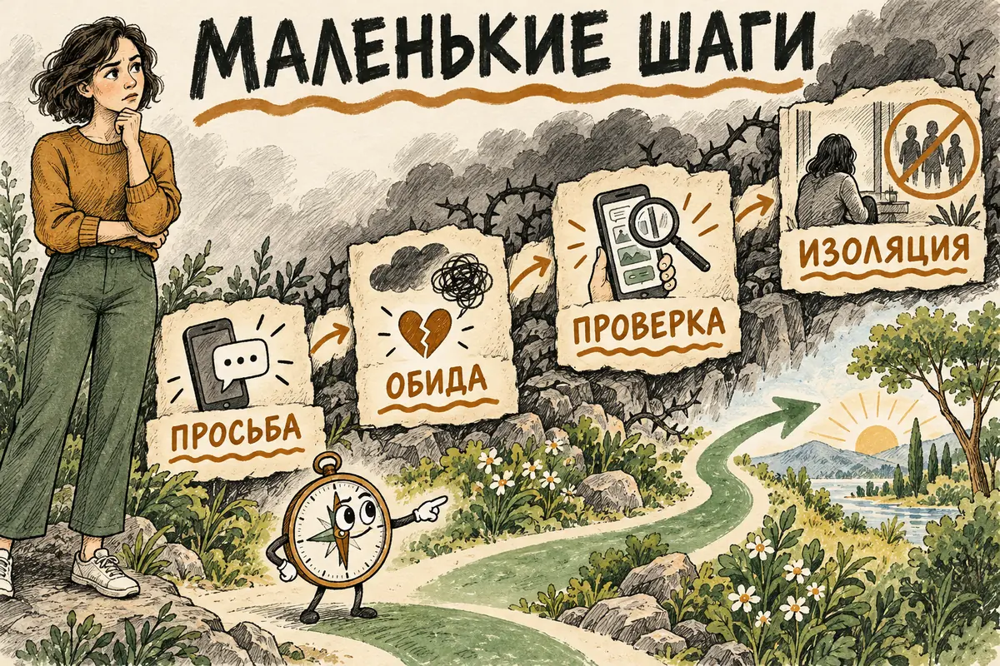
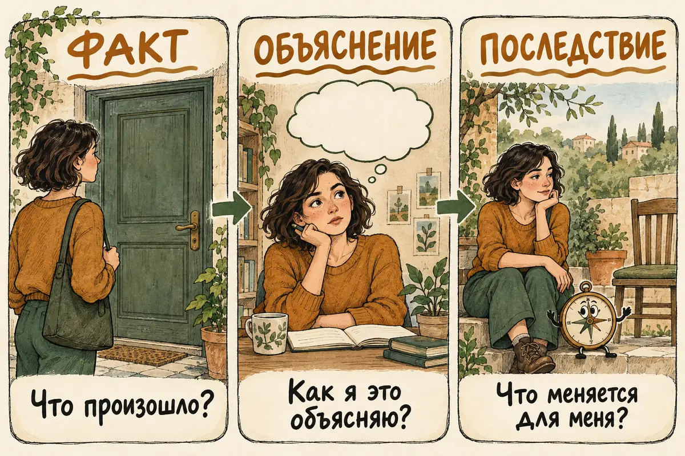
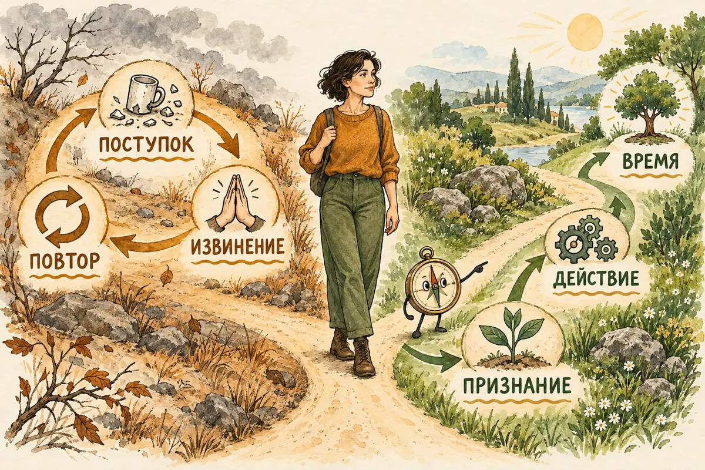

Главная → Блог → Красные флаги
Почему мы не замечаем красные флаги и оправдываем партнёра
31.10.2026 · 22 минуты чтения
У Ильи и Марины третий год отношений. Илья уже знает, что после встречи с друзьями Марина спросит, кто там был и почему он поздно ответил. Он называет это ревностью, потом — тревогой, а иногда даже заботой. В день, когда он отменяет встречу, чтобы избежать очередного допроса, становится трудно объяснить себе, что изменилось.
Мы оправдываем партнёра не потому, что «не умеем выбирать» или «любим страдать». Люди склонны видеть в близком человеке хорошее, учитывать обстоятельства и давать шанс. Эти качества помогают отношениям, пока второй человек тоже признаёт ошибки и меняет поведение. Если же за каждым нарушением следует красивое объяснение, но не действие, способность понимать другого начинает работать против вас.
В этой статье разберём, почему заметить повторяющийся сценарий трудно изнутри отношений, как отличать обычные ошибки от контроля и какие шаги можно сделать, когда ясности пока нет. Примеры условные: контроль и насилие встречаются у людей любого пола и в парах любого состава.
- Красный флаг или разовая ошибка: как различить?
- Почему мы оправдываем партнёра в начале отношений?
- Почему мы объясняем и оправдываем тревожное поведение?
- Почему эмоциональные качели удерживают в отношениях?
- «Наверное, я преувеличиваю»: как теряется доверие к себе
- Почему прошлый опыт может мешать распознать давление
- Любовь, надежда, вложенные годы — почему решение нельзя свести к «просто уйди»
- Как отличить заботу от контроля в отношениях?
- Пять способов проверить реальность, не устраивая суд над отношениями
- Что говорить, если разговор безопасен
- Когда обещание измениться заслуживает доверия
- Если вы замечаете угрозы, слежение или насилие
- Если красные флаги видит ваш близкий
- Что обычно мешает разобраться
- Частые вопросы
- Вместо вывода: доверять фактам и себе одновременно
Красный флаг или разовая ошибка: как различить?
Один неприятный разговор ещё мало говорит об отношениях. Человек может устать, сорваться, неудачно пошутить, не понять вашу просьбу. Важно, что происходит дальше. Он признаёт конкретное действие без «но ты меня довела»? Слышит, что вам было больно? Уважает просьбу больше так не делать? Через месяц похожая ситуация выглядит иначе?
Повторяющийся сценарий устроен по-другому. Сначала вам задают вопрос, на который вы не обязаны отвечать. После отказа следуют обида, молчание или обвинение. Позже человек извиняется, снова становится нежным, но при следующем отказе всё возвращается. Постепенно вы соглашаетесь заранее, чтобы избежать реакции. Формально вы можете сказать «нет». На практике цена этого слова всё время растёт.
Сравнивать полезно не только слова партнёра, но и последствия для вашей жизни. Вы можете по-прежнему любить его, вместе смеяться и строить планы. Одновременно вы можете всё реже видеть друзей, подбирать безобидные фразы перед разговором и проверять телефон с тревогой. Хорошие моменты реальны; они не отменяют повторяющегося вреда. Обратное тоже верно: один болезненный момент не стирает всех отношений и сам по себе не доказывает насилие.
Для первого ориентира задайте три вопроса: что именно произошло, как человек отнёсся к вашему «мне так нельзя», что изменилось после разговора? Подробный список признаков есть в статье о токсичных отношениях. Здесь нас интересует, почему даже при наличии признаков мы продолжаем объяснять их безобидными причинами.
Почему мы оправдываем партнёра в начале отношений?

На первых свиданиях у нас мало данных: несколько встреч, переписки, рассказы о прошлом. Первое тёплое впечатление может окрасить оценку следующих поступков — это называют эффектом ореола. Мы охотнее замечаем факты, которые поддерживают уже сложившийся образ; это близко к подтверждающему искажению. Эти термины описывают возможную ловушку восприятия, а не доказывают, что конкретный партнёр опасен. Желание, чтобы отношения сложились, естественно.
К тому же некоторые действия внешне похожи на заботу. «Напиши, когда доберёшься» может быть вниманием. Но если за забытым сообщением следует допрос, требование делиться геолокацией или наказание молчанием, смысл меняется. Разницу показывает не сама фраза, а право отказаться без последствий. Забота оставляет человеку выбор. Контроль постепенно забирает его.
Сильное сближение тоже может восприниматься по-разному. У двух людей бывает взаимное желание проводить вместе много времени. Настораживает сочетание скорости с давлением: «Если любишь, переезжай сейчас», «Удали переписку с бывшими», «Тебе больше никто не нужен». Американская служба помощи пострадавшим The Hotline описывает ситуации, когда поток внимания и подарков используется для давления или последующего контроля. Сам по себе букет или раннее признание таким доказательством не является.
На этом этапе полезно не угадывать намерения другого человека, а смотреть на вашу свободу регулировать темп. Можно ли сказать «мне нравится с тобой, но я пока не готов(а) съезжаться» и остаться в уважительном контакте? Партнёр может расстроиться. Ему при этом не нужно наказывать вас за собственный темп.
Почему мы объясняем и оправдываем тревожное поведение?

Объяснить поведение — значит понять возможную причину. Оправдать — значит решить, что из-за этой причины последствия для вас не имеют значения. Между ними есть важное расстояние. Партнёр может тревожиться после прошлого предательства. Это помогает понять, почему ему трудно доверять. Но не делает нормой проверку вашего телефона без согласия. Он может быть уставшим и раздражённым. Это не даёт ему права унижать вас перед друзьями.
Многие объяснения звучат разумно, потому что частично правдивы. Сложная работа действительно истощает. Детский опыт действительно влияет на то, как человек общается. Страх потерять близость бывает сильным. Вопрос в том, что человек делает со своим состоянием. Говорит о нём и ищет способы обходиться без давления? Или снова передаёт ответственность вам: «Теперь не встречайся с подругой, чтобы я не ревновал»?
Характерный признак оправдания — вам приходится каждый раз добавлять новое исключение. «Он никогда бы не накричал, если бы не устал». «Он не запретил, он просто так расстроился, что я сама отказалась». «Он не контролирует, он волнуется». Здесь может действовать когнитивный диссонанс: «я люблю этого человека» и «этот человек причиняет мне боль» трудно удерживать вместе, поэтому хочется смягчить вторую мысль. Исследование о переосмыслении агрессии в близких отношениях показывает, что привязанность и вложенность могут усиливать такое внутреннее противоречие; это одна из возможных причин, а не объяснение каждого случая. Исследование.
Попробуйте разделить заметку на три короткие строки. Факт: «После моего отказа дать пароль партнёр два дня со мной не разговаривал». Объяснение: «Вероятно, он испугался». Последствие: «Я думаю дать пароль, чтобы не повторилось». Причина страха может быть любой; молчание как способ добиться пароля остаётся тем, что произошло. Вести записи безопасно только там, куда партнёр не имеет доступа.
Почему эмоциональные качели удерживают в отношениях?
Труднее всего оценивать отношения, где нет постоянной грубости. Партнёр может быть заботливым после ссоры, помогать в болезни, смешить вас и строить общее будущее. Именно поэтому мысль «что-то не так» часто встречает внутреннее возражение: «Но он ведь не такой всегда». Не нужно доказывать, что всё время было плохо, чтобы отнестись к повторяющемуся вреду серьёзно.
Когда трудные периоды сменяются особенно тёплыми, внимание приковывается к возвращению прежней близости. Такую смену иногда называют эмоциональными качелями. В исследованиях насильственных отношений обсуждают прерывистое подкрепление: непредсказуемые периоды тепла могут поддерживать надежду даже при повторяющемся вреде. Это не универсальный закон и не диагноз вашей пары. Имеет смысл смотреть на наблюдаемое изменение: признаёт ли партнёр поступок без встречных обвинений, предлагает ли другой способ действовать, уважает ли вас при новом несогласии? Исследование отношений после разрыва.
Здесь важно не превращать любое примирение в «манипуляцию». У пары могут быть искренние ссоры и искренние попытки их исправить. Разница в том, становится ли безопаснее обсуждать трудное. Если за хорошие дни приходится расплачиваться молчанием о своих нуждах, стоимость примирения слишком велика. Если после конфликта обоим удаётся назвать свою часть и договорённость соблюдается, это другой процесс.
Необязательно выбирать между двумя крайностями — «он хороший» и «он ужасный». Человек может иметь хорошие качества и вести себя недопустимо в конкретных ситуациях. Такая мысль часто даёт больше ясности, чем попытка вынести окончательный приговор его личности.
«Наверное, я преувеличиваю»: как теряется доверие к себе
Сомнение в себе может появиться без чьего-либо злого умысла. Когда близкий человек видит событие иначе, мы естественно сверяем воспоминания. Иногда действительно обнаруживается недоразумение. Тревога возникает, когда разговоры раз за разом заканчиваются одним результатом: ваши слова объявляют выдумкой, чувствительность — проблемой, а вопрос о конкретном поступке исчезает.
Например, вы говорите: «Мне было неприятно, когда ты рассказал друзьям о моём долге». В ответ слышите: «Ты всё принимаешь близко к сердцу. Все смеялись. Лучше бы порадовалась, что я умею разрядить обстановку». Через десять минут вы уже спорите о том, умеете ли шутить, а исходный вопрос — можно ли раскрывать ваши личные сведения без согласия — не обсуждается. Если такое смещение повторяется, в следующий раз проще промолчать.
Отдельная статья о газлайтинге подробно разбирает случаи, когда человек систематически отрицает события и подрывает доверие другого к собственной памяти. Не стоит ставить этот ярлык на каждую фразу «я помню иначе». Для оценки полезнее смотреть на повторяемость, возможность сверить факты и готовность партнёра признать хотя бы часть вашей реальности.
Простой способ вернуть опору — пересказать ситуацию человеку, которому вы доверяете, без готового вывода. «Вот что произошло; вот что я сказала; вот что ответил он. Что ты замечаешь?» Вы не передаёте ему право решать за вас. Вы получаете ещё одну точку обзора. Если близких людей почти не осталось из-за недовольства партнёра, это само по себе важное наблюдение.
Почему прошлый опыт может мешать распознать давление
Иногда знакомое воспринимается как обычное, даже если причиняет боль. Если в семье раздражение выражали молчанием, отказ от контакта на несколько дней может казаться привычной частью любви. Если близость всегда требовала угадывать настроение взрослого, во взрослом возрасте внимательное слежение за настроением партнёра ощущается как забота. Но одинаковые действия могут возникать по разным причинам; по одному детскому воспоминанию нельзя объяснить все нынешние отношения.
У других людей источник не в детстве. Это может быть опыт предыдущего романа, в котором после отказа начинался скандал. Или нынешние обстоятельства: болезнь, зависимость от общего жилья, переезд в чужой город, отсутствие денег. Когда риски расставания велики, мы особенно нуждаемся в надежде, что проблема решится разговором. Американская служба The Hotline перечисляет страх, любовь, угрозы, стыд и нехватку ресурсов среди причин, по которым трудно уйти из отношений с насилием. Это ограничения выбора, а не «слабость характера».
Вопрос «почему я не заметил(а) раньше?» часто звучит как обвинение себе. Но давление нередко нарастает малыми шагами: сначала просьба сообщать о задержке, затем обида на встречу с другом, позже — требование показать переписку. Каждая уступка кажется небольшой, пока не сравнишь сегодняшние правила с теми, что были год назад. The Hotline отмечает, что в начале склонность к контролю бывает трудно распознать. Это не значит, что постепенность есть в каждом случае: насилие может возникнуть и внезапно.
Полезнее спросить иначе: «Что я замечаю теперь, когда у меня больше фактов?» Ответ на этот вопрос доступен в настоящем и не требует пересматривать всё прошлое как цепочку ошибок. Если тема знакомого сценария отзывается, подробнее о влиянии раннего опыта — в материале «Детские травмы», а о привычках сближения и дистанции — в статье «Типы привязанности». Эти тексты не служат тестом, который объяснит конкретного партнёра; они дают язык для размышления о собственных реакциях.
Любовь, надежда, вложенные годы — почему решение нельзя свести к «просто уйди»
Со стороны последовательность кажется очевидной: заметить нарушение, сказать о нём, уйти, если оно повторилось. Внутри отношений у этой схемы появляется множество условий. Есть общие дети, квартира, деньги, питомец, страх одиночества, зависимость от дохода партнёра. Даже без них остаются любовь и воспоминания. Можно понимать, что вам плохо, и всё ещё хотеть быть с человеком. Эти чувства не отменяют фактов.
«Я уже столько вложил(а)» — ещё одна причина задерживаться. Это похоже на ошибку невозвратных затрат: после нескольких лет и сотен примирений разрыв кажется признанием, что всё было зря. Исследования показывают, что вложенное время и усилия могут влиять на решение продолжать отношения; однако в реальной жизни есть и другие причины остаться — любовь, дети, жильё и безопасность. Прошлые усилия уже были сделаны; оценивать будущее стоит по тому, что происходит сейчас. Исследование эффекта затрат в близких отношениях.
Окружающие нередко давят с противоположных сторон. Одни говорят «стерпи, у всех бывает», другие — «немедленно бросай». Первые обесценивают вашу боль, вторые могут не учитывать реальный риск и ресурсы. Поддержка звучит иначе: «Я верю, что тебе трудно. Давай подумаем, что сделает ближайшую неделю безопаснее и понятнее». Особенно при угрозах и контроле планирование важнее эффектного ультиматума.
Если хочется разобраться, почему тянет вернуться после болезненной ссоры или разрыва, на сайте есть отдельная статья об эмоциональной зависимости. Она описывает вашу внутреннюю опору. Вопрос о безопасности отношений при этом нужно рассматривать отдельно: даже очень сильная привязанность не объясняет и не оправдывает чужие угрозы или контроль.
Как отличить заботу от контроля в отношениях?
Не каждое несовпадение желаний — красный флаг. Один человек хочет видеться ежедневно, другой — два раза в неделю. Один тяжело переносит опоздания, другой часто задерживается. Такие различия могут привести к расставанию без виноватых. Признак, на который стоит смотреть, — что происходит после ясной границы и можно ли обсуждать различие без наказания.
Представьте три ситуации. В первой партнёр спрашивает, почему вы не ответили, слышит объяснение и просит заранее сообщать о долгой недоступности, если это возможно. Вы вправе обсудить просьбу. Во второй он злится и позже признаёт, что отреагировал резко; готов искать другой способ говорить о тревоге. Это проблема в общении. В третьей он требует постоянного доступа к геолокации, угрожает разрывом при отказе и называет право на приватность доказательством измены. Здесь уже есть давление.
Когда ограничения, слежение и изоляция складываются в повторяющуюся систему, специалисты называют это принудительным контролем (coercive control). Это не описание одного неловкого сообщения. CDC относит к таким действиям ограничение доступа к деньгам, друзьям и транспорту, чрезмерное наблюдение и угрозы. Название помогает увидеть связь между эпизодами, но не заменяет оценку вашей конкретной ситуации.
| Фраза | Возможное значение | Что проверить |
|---|---|---|
| «Напиши, когда доберёшься» | Забота или начало обязательного отчёта | Что будет, если я забуду написать? |
| «Я просто ревную, потому что люблю» | Признание чувства или оправдание запретов | Берёт ли человек ответственность за ревность, не ограничивая меня? |
| «Я же извинился» | Попытка исправить ошибку или закрыть тему | Меняется ли поведение после извинения? |
Вопросы для различения:
- Есть ли у меня реальная возможность отказаться?
- Что происходит после отказа: разговор, огорчение, пауза по договорённости или наказание?
- Могу ли я продолжать общаться с близкими, распоряжаться деньгами и иметь личное пространство?
- После обсуждения стало понятнее или я ещё сильнее слежу за собой?
Это ориентиры, а не балльная система. Если партнёр угрожает, преследует или применяет силу, не нужно набирать «достаточно пунктов» для права попросить помощи. NHS и The Hotline относят к признакам психологического насилия изоляцию, угрозы, унижение и контроль денег или общения.
О том, как формулировать просьбу и что делать, если после «нет» давят, подробнее в статье «Личные границы». Но в ситуации угроз проблема не в том, что вы «недостаточно правильно» сформулировали границу. Ответственность за угрозу лежит на том, кто её произносит.
Пять способов проверить реальность, не устраивая суд над отношениями
- Запишите один эпизод конкретными действиями. Вместо «партнёр ужасно ревнует» — «партнёр попросил показать переписку, после отказа обвинил меня во лжи и не разговаривал до следующего дня». Конкретика снижает риск как преувеличить, так и обесценить произошедшее. Если вы начинаете рассказ с «он хороший человек, просто…», попробуйте на минуту убрать объяснение и описать только действие. Если заметки могут быть прочитаны партнёром, выберите безопасный способ хранения или откажитесь от записи.
- Сравните эпизоды во времени. Что повторилось за последний месяц? Есть ли движение к более спокойным разговорам или круг замыкается на одном месте? Важно не подсчитывать «хорошие» и «плохие» дни, а замечать, меняется ли поведение после признанной проблемы.
- Назовите свою потребность без диагноза партнёру. «Мне важно видеться с друзьями без допросов после встречи» даёт больше информации, чем «ты абьюзер». В безопасных отношениях это открывает обсуждение. Если реакция пугает вас заранее, проводить такой разговор наедине необязательно.
- Обратитесь за внешним взглядом. Выберите человека, который умеет слушать и не будет публиковать вашу историю. Попросите помочь увидеть факты, которые вы упускаете. Если близкому человеку трудно быть нейтральным, можно обратиться к психологу или специалисту службы помощи. Цель — расширить обзор, а не получить чужой приказ.
- Проверьте свои ресурсы. Есть ли доступ к деньгам, документам, телефону, безопасному месту и человеку, которому можно написать? Даже если вы пока не думаете о расставании, такая проверка помогает понять, сколько свободы у вас на практике. При угрозах она становится частью плана безопасности.
Эти шаги не требуют объявлять партнёру «проверку» или провоцировать конфликт. Вам не нужно специально испытывать человека отказами. Достаточно внимательно отнестись к тем ситуациям, которые уже происходят. И не стоит ждать идеальной уверенности: ясность часто появляется постепенно, а право на поддержку есть и при сомнениях.
Что говорить, если разговор безопасен
Когда угроз, преследования и страха реакции нет, разговор может прояснить ситуацию. Лучше выбирать спокойное время и обсуждать одно действие, а не весь характер человека. Формула проста: «Когда произошло X, я почувствовал(а) Y. Мне нужно Z. Как мы можем это устроить?» Она не гарантирует соглашения, зато показывает, готов ли партнёр слышать вашу границу.
Примеры реплик:
- «Когда ты пошутил(а) о моей зарплате при друзьях, мне было стыдно. Я не хочу, чтобы мои деньги обсуждали без меня. Пожалуйста, не делай так снова».
- «Я понимаю, что тебе тревожно, когда я долго не отвечаю. Но я не согласен(на) передавать пароль от телефона. Давай обсудим планы без проверки переписок».
- «Я могу говорить о ссоре, когда мы оба готовы. Молчание на несколько дней без объяснения для меня тяжело. Если тебе нужна пауза, скажи, когда вернёмся к разговору».
Обратите внимание на ответ. Человек может расстроиться или попросить время. Но если после каждого разговора вы извиняетесь за сам факт просьбы, проблема не решается. Если в ответ звучит угроза самоубийства, воспринимайте её всерьёз: сообщите человеку, которому доверяете, и при непосредственной опасности звоните 112. Не оставайтесь с угрозой в одиночку; она не обязывает продолжать отношения. Рекомендации ЦЭПП МЧС России.
Совет «поговорите открыто» применим только там, где это безопасно. При контроле, слежении, угрозах или насилии обсуждение плана ухода может повысить риск. Тогда первым шагом будет не объяснение партнёру, а связь с доверенным человеком или профильной службой и план безопасности.
Когда обещание измениться заслуживает доверия

Фраза «я всё понял» важна, но сама по себе ничего не подтверждает. Изменение видно в действиях, особенно тогда, когда человеку снова неудобно. Он перестаёт читать вашу переписку без разрешения? Не оправдывает вспышку тем, что вы «спровоцировали» её? Принимает ваше право встречаться с друзьями? Если случился срыв, сам признаёт его и возвращается к договорённости? Устойчивость поведения важнее эмоциональной силы извинения.
Есть разница между просьбой о помощи и передачей ответственности. «Я часто ревную, это моя проблема, я хочу с ней работать» — признание своей части. «Я ревную, поэтому перестань общаться с коллегой» — попытка управлять вашей жизнью. Вы вправе сочувствовать чужому страху и не соглашаться на контроль как лекарство от него.
Американская служба The Hotline в материале об изменении насильственного поведения подчёркивает признание ответственности без оправданий и прекращение контроля. Она также не рекомендует парную терапию как способ устранить насилие: там, где один партнёр боится другого, совместное обсуждение может быть небезопасным. При обычных взаимных конфликтах помощь семейного специалиста может быть уместной.
Не назначайте себе срок, за который вы обязаны «дождаться» изменений. Ваш предел может быть другим. И не нужно доказывать, что партнёр неспособен измениться когда-либо, чтобы выйти из отношений, в которых вам сейчас небезопасно.
Если вы замечаете угрозы, слежение или насилие
Угрозы, физическое или сексуальное насилие, преследование, ограничения доступа к деньгам, документам или связи — повод сосредоточиться на безопасности. В такой ситуации не стоит проверять партнёра провокациями, предъявлять ему записи или объявлять о расставании в момент конфликта. Подготовка может включать контакт с человеком, которому вы доверяете, доступ к документам и средствам связи, место, куда можно уйти, и консультацию профильной службы. План всегда зависит от конкретных обстоятельств: дети, жильё, средства, наличие оружия и прошлые угрозы меняют риски.
The Hotline рекомендует заранее продумывать безопасность и обращаться к доверенным людям; уход может требовать времени и осторожности. Это общая рамка, а американские юридические и сервисные детали нельзя автоматически переносить на Россию.
В России: при непосредственной угрозе жизни или продолжающемся насилии звоните 112 — этот номер связывает с экстренными службами, включая полицию и скорую помощь. Если есть травмы, обратитесь за медицинской помощью и попросите зафиксировать повреждения; при угрозах или насилии можно обратиться с заявлением в любое отделение полиции. Сохраняйте сообщения и другие сведения только если это безопасно. Рекомендации МЧС о 112, рекомендации ЦЭПП МЧС о медицинской помощи, разъяснение Минюста об обращении в полицию.
Для психологической поддержки работает линия ЦЭПП МЧС России: +7 (495) 989-50-50. Номер и круглосуточную работу подтверждает сайт службы. В некоторых регионах действуют кризисные центры; контакты и условия приёма уточняйте в местной социальной службе. Например, московский кризисный центр для женщин и детей указан на городском сайте. Дополнительные варианты бесплатной помощи собраны в справочнике AI Therapist. Если телефон или браузер контролируется партнёром, безопаснее искать помощь с устройства, к которому у него нет доступа.
Никто не обязан сначала точно назвать происходящее «абьюзом». Можно сказать специалисту или близкому: «Я боюсь реакции партнёра. Мне нужно продумать, как оставаться в безопасности». Этого достаточно, чтобы начать разговор. Если вы пережили насилие, ответственность лежит на совершившем его человеке; степень вашей внимательности к ранним признакам её не меняет.
Если красные флаги видит ваш близкий
Фраза «как ты можешь этого не видеть?» редко помогает. Человек может уже замечать проблему, но бояться реакции партнёра, потери жилья или того, что ему не поверят. После резкого осуждения он может меньше рассказывать, даже если отношения станут опаснее. Больше пользы приносит спокойный разговор о конкретных наблюдениях: «Я заметила, что ты перестала встречаться с нами после его звонков. Как тебе сейчас?»
Слушайте ответ и сохраняйте контакт. Не требуйте признания «да, это насилие» и не ставьте условие «уйдёшь — тогда помогу». Можно предложить практическую помощь: безопасное место для разговора, сопровождение к специалисту, хранение документов или контакт службы. Делать что-либо за человека, особенно писать партнёру от его имени, без согласия опасно. Вопрос «Что сейчас было бы для тебя полезно?» оставляет ему контроль хотя бы над ближайшим шагом.
Если вы услышали об угрозах жизни, насилии или преследовании, относитесь к ним серьёзно. Вместе обсудите, как связаться со службой помощи и что делать при непосредственной опасности. Сохраняйте конфиденциальность разговора, если раскрытие сведений может повысить риск. Поддержка нужна и тому, кто ушёл, и тому, кто пока остаётся: отношения не становятся простыми от того, что со стороны решение кажется очевидным.
Что обычно мешает разобраться
Первое препятствие — попытка найти безошибочный тест. В интернете легко встретить списки из десяти, двадцати или пятидесяти «красных флагов». Такой список может подсказать, на что обратить внимание, но он не знает контекста, частоты, реакции на отказ и того, можете ли вы безопасно выйти из комнаты. Иногда один пункт — угроза или удар — уже достаточен, чтобы искать помощь. Иногда пять пунктов описывают неловкий, но исправимый разговор. Считать совпадения полезно меньше, чем описывать конкретный повторяющийся процесс.
Второе — спор о намерениях. «Он сделал это специально или случайно?» На этот вопрос часто невозможно ответить. Даже сам партнёр может объяснять своё поведение по-разному в разные дни. Для решения о собственной границе знать его скрытый мотив необязательно. Достаточно того, что поступок повторяется, причиняет вред и не меняется после ясного разговора. Намерение может влиять на то, как вы понимаете человека; последствие показывает, как вы живёте рядом с ним.
Третье — поиск идеального свидетеля. Хочется показать переписку психологу, другу или ИИ и услышать однозначное: «Ты права». Внешний взгляд помогает, но никто не видит всей вашей жизни через один фрагмент. Хорошая помощь не отнимает у вас право на решение: человек уточняет факты, обсуждает безопасность и помогает увидеть варианты. Если собеседник сразу знает, что вам «надо» сделать, не задав ни одного вопроса о рисках и ресурсах, его уверенность может быть преждевременной.
Четвёртое — ожидание, что сначала исчезнут сомнения, а потом можно будет действовать. На практике небольшие безопасные действия часто и создают ясность. Можно восстановить контакт с другом, спросить о доступной помощи, выяснить, где лежат документы, записать несколько эпизодов. Ни один из этих шагов сам по себе не обязывает уходить. Они возвращают возможность выбирать, когда эмоции и обстоятельства делают картину слишком тесной.
Пятое — стыд за то, что вы остались. Стыд затрудняет разговор даже с теми, кто мог бы помочь. Если сегодня вы не готовы к решению, это не делает ваши наблюдения недействительными. Можно начать с самой честной фразы: «Мне кажется, что в отношениях есть проблема, но я пока защищаю его и не понимаю, что делать». В этой фразе уже есть два важных факта: вы что-то замечаете и вам нужна опора.
Частые вопросы
Если человек извинился, это значит, что красный флаг исчез?
Извинение — начало разговора, а не доказательство перемен. Смотрите, признал ли человек конкретный поступок, перестал ли перекладывать вину и изменилось ли поведение в похожих ситуациях. Вы вправе принять извинение и всё равно установить границу.
Я тоже ошибаюсь и иногда кричу. Значит, мы оба одинаково виноваты?
Ваши действия тоже стоит обсуждать и менять, если они причиняют вред. Но ответственность за угрозу, слежение или насилие остаётся за тем, кто это делает; ваши ошибки её не отменяют. Важно оценивать конкретные действия каждого, а не искать одного «идеального» человека.
Можно ли поговорить с партнёром, если я боюсь его реакции?
Если вы боитесь, не нужно проводить разговор наедине только потому, что так принято советовать парам. Сначала обсудите ситуацию с человеком, которому доверяете, или со службой помощи и продумайте безопасность. При непосредственной угрозе жизни в России звоните 112.
Может ли ИИ-психолог сказать, что у меня абьюзивные отношения?
ИИ может помочь разложить события по времени, подобрать слова для границы и подготовить вопросы для специалиста. Он не знает всей ситуации, не может проверить факты и не должен принимать решение о вашей безопасности вместо вас. При угрозах и насилии нужна помощь людей и профильных служб.
Вместо вывода: доверять фактам и себе одновременно
Не замечать тревожный сигнал сразу — человеческая ситуация. Изнутри отношений мы видим не список признаков, а человека, которого любим, хорошие дни, объяснения, надежду и собственные обязательства. Ясность приходит не через самобичевание, а через конкретные вопросы: что произошло, повторяется ли это, как человек реагирует на мой отказ, свободнее или теснее становится моя жизнь рядом с ним?
Если вопрос не про срочную безопасность и вам трудно собраться с мыслями, можно спокойно описать конкретный эпизод в чате AI Therapist: что случилось, что вы почувствовали, какое объяснение предложили себе и какой следующий шаг рассматриваете. Это инструмент для размышления, а не судья отношений и не замена психолога. При страхе, угрозах или насилии обращайтесь к людям и службам помощи; при непосредственной угрозе жизни — 112.
Источники
Ссылки на конкретные исследования и рекомендации также стоят рядом с утверждениями в тексте. Основные материалы:
- Исследование переосмысления агрессии в близких отношениях — о том, как когнитивный диссонанс влияет на объяснение поступков партнёра.
- Работа Дональда Даттона и Сьюзен Пейнтер — о чередовании давления и тепла в насильственных отношениях.
- CDC: словарь терминов о насилии со стороны партнёра — в том числе о принудительном контроле.
- The Hotline: признаки лавбомбинга и почему люди остаются в отношениях с насилием.
- The Hotline: эмоциональное насилие и подготовка к уходу с учётом безопасности.
- NHS: помощь при домашнем насилии.
- Центр экстренной психологической помощи МЧС России: как защитить себя от насилия и МЧС: система 112.
- Минюст России: куда сообщить о преступлении.
Как подготовлен материал. Текст подготовлен редакцией AI Therapist с опорой на перечисленные источники. Примеры условные; статья носит просветительский характер, не заменяет консультацию специалиста и не позволяет поставить диагноз партнёру.
Кто отвечает за содержание сайта — на странице о проекте.